DVRST - TRANSITION TO REALITY(New)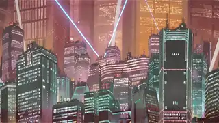
DVRST - Close Eyes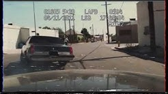
DVRST - Dream Space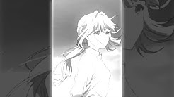
Dxrk ダーク - CAUTION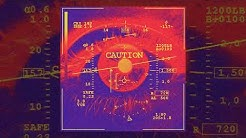
Dxrk ダーク - CLOUD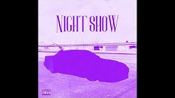
Dxrk ダーク - R34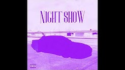
Freddie Dredd - All Alone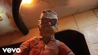
Freddie Dredd - Devil's Work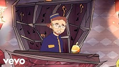
Ghostface Playa - Why Not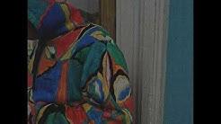
Ghostface Playa - HERE WE GO AGAIN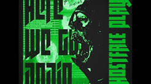
Ghostface Playa - Graveyard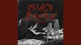
Ghostface Playa - KILLKA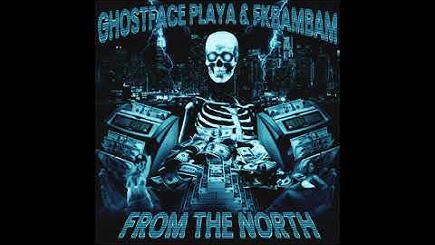
l19u1d - BLACK BLOOD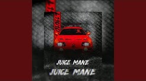
l19u1d - I AM THE KING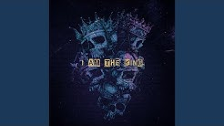
ZODIVK - Black Heart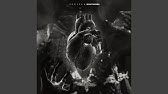
ZODIVK - Devil Eyes
ZODIVK - My Divk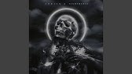
HENSONN - SAHARA
HENSONN - SAMURAI
Fkbambam, Hensonn - DARK SAUCE
KUTE - AVOID ME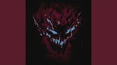
KUTE - AVOID ME (Slowed Reverb)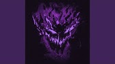
KUTE - HYPERPHONK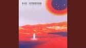
DXRK ダーク, KORDHELL - UNHOLY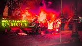
KORDHELL, KUTE - DEAD ON ARRIVAL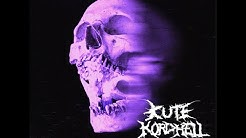
KORDHELL - SCOPIN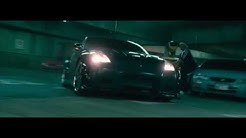
KXNVRA - BURNOUT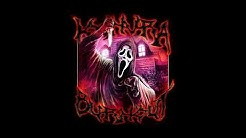
KXNVRA, KXLLYXU - UNDERSTEER(New)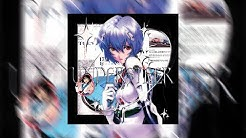
KXNVRA,MC ORSEN - RITUAL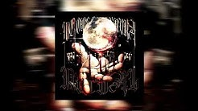
KSLV - Disaster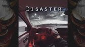
KSLV - On the Edge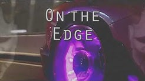
KSLV - The Dungeon(New)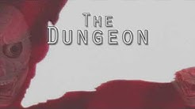
PlayaPhonk - GODS OF EGYPT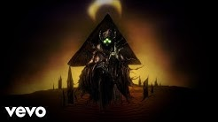
Portwave - Shadow Lady ( PHONK REMIX )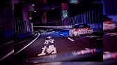
$WERVE - CITY LIGHT$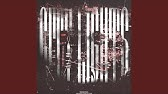
$WERVE, dazigus - abdulgaming28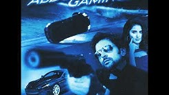
SHADXWBXRN - DAMAGE(New)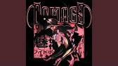
SHADXWBXRN - OPEN WOUNDS
SHADXWBXRN - BLAST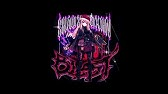
SHADXWBXRN - Collapse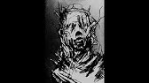
SHADXWBXRN - GUNSHOT
SHADXWBXRN - KNIGHT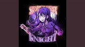